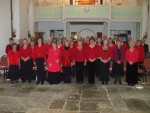

|
Sarisbury Choral Society
Sarisbury Choral Society began life in 1948 as an evening class funded by Hampshire County. As an evening class nobody was barred from joining and the group were named “The Sarisbury Community Choir”. The first conductor, Charles Martin, was appointed by County Council in 1949 and he led the choir to compete in the Winchester & County Music Festival for the first time in 1951. It was in 1960, after eleven years of hard work before the choir won the Winchester Festival Banner. Charles Martin continued in his post until his death in 1960 and he was succeeded by John Moody. In 1949 the Choir started an association with the Hamble Choir, conducted by Mr Harding, the two choirs often singing in joint concerts. The two choirs eventually amalgamated and became Sarisbury & Hamble Choral Society. John Moody retired in 1971 and handed the baton to Sheila Javes who guided the choir to compete at both Winchester and Petersfield Music Festivals. In 1985 Christine Stokes became conductor and the choir continued to sing in Romsey Abbey and Winchester Cathedral. January 1996 saw Robin Phillips take over as Musical Director. The choir reverted to Sarisbury Choral Society, reflecting the catchment area of the choir members. It produces at least two concerts a year, and also participates in Winchester & County Music Festival. Since 2000 we have supported Voices for Hospices and biannually host “Come & Sing” performances with friends from other choirs in the area who love to sing. In 2009, Graham Kidd became our Musical Director. Members of the choir take part in various "Come and Sing" events held in the Royal Albert Hall, London, including the annual Messiah Concert and the choir supports other choirs in concerts. At Christmas, we sing carols in various venues in the locality. Our existence of over 60 years is due entirely to our love of singing and also to the support from the talented conductors and accompanists, who have given us so much encouragement. Meetings Thursdays 7.45 – 9.45 Sarisbury Community Centre. Conductor: Graham Kidd www.graydkidd.co.uk Contact the Society
|
Click image to view  |